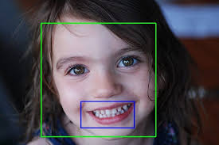
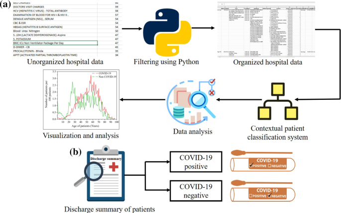

This project enhances polyp detection in colonoscopic images using DEtection TRansformers (DETR) for improved accuracy and speed. By leveraging transformer learning techniques, we address the challenges of varying polyp sizes and reduce the need for extensive hyperparameter tuning. The encoder-decoder architecture captures meaningful data, ensuring reliable detection and better patient outcomes.
 />
/>

VoiceAssist Pro is an advanced speech recognition and synthesis application designed to enhance communication accessibility for individuals with hearing or speech impairments. It leverages cutting-edge deep learning models to provide real-time transcription and natural-sounding speech synthesis.

PharmaTrialAnalyzer is a Python package designed to streamline the management and analysis of clinical trial data. The package automates the process of ingesting, cleaning, validating, analyzing, and reporting clinical trial data. It's built for pharmaceutical companies, clinical researchers, and data scientists who need to handle large datasets from clinical trials.

Our Smile Detection project leverages advanced computer vision techniques to accurately identify smiles in real-time from video and image feeds. Utilizing deep learning models, particularly convolutional neural networks (CNNs), our system processes facial features to detect smiles with high precision. This project aims to enhance user experiences in various applications such as automated customer service, interactive marketing, and emotional analysis. By implementing robust algorithms and extensive training on diverse datasets, our Smile Detection system ensures reliable performance across different environments and demographics.

Awarded the best student project among 212 participants in the machine learning module, this project focused on analyzing and predicting outcomes for COVID-19 patients using advanced machine learning techniques. Leveraging the AI Fairness 360 (AIF360) toolkit, the project aimed to ensure the analysis was accurate and free from bias. This work showcases proficiency in data science, machine learning, and ethical AI practices, providing valuable insights into healthcare applications.
This project aims to classify different job roles by combining techniques of Natural Language Processing (NLP) and Machine Learning (ML). The first step involves data visualization, followed by preprocessing related to NLP, such as removing missing values and features with less important information. Various techniques, including stemming and lemmatization, are used to process the data and scale the text appropriately. The NLP libraries utilized in this project include NLTK, SpaCy, and scikit-learn for efficient text processing and feature extraction.